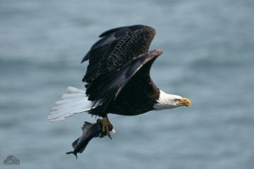

Library
Cull: pick the keepers
Lightfast groups bursts and repeated shots of the same scene, suggests the best of each group, and lets you keep or drop shots with single keys.
Start culling
- Before importing
- Tick Cull before importing in the Import dialog; the button becomes Continue to Culling… and the same dialog moves on to the Cull step. Only keepers go into the import entry. The rest are still cataloged, flagged Rejected, so you can look again later.
- After importing
- Right-click an import in the sidebar › Cull…, or Library › Cull Import…. Keepers are flagged Picked and the rest Rejected; nothing is removed.
The Cull view
MatchSame FrameSimilar Shots
GroupingTight
Loose
Similar shots · 4 photos
 ✓
✓


Same frame · 2 photos
 ✓
✓Single shots


SuggestedKeep
Sharpness 100% of the group's best · Face quality —
- Match and Grouping at the top. Same Frame groups only shots framed alike (someone blinked, moved slightly). Similar Shots (the default) also groups the same scene reframed or zoomed a little. The Grouping slider, from Tight to Loose, regroups instantly. It starts at Tight, so only shots that really match are grouped; slide toward Loose to group more.
- Groups as rows. Keepers have a check; dropped shots are dimmed. Single shots are listed last and kept. Drag the line between the groups and the large photo to make the list wider or narrower; the photos wrap to fit.
- The focused photo, large, with its sharpness and, when there are faces, face quality (eyes open, in focus). Lightfast marks the best one Suggested and starts it as the keeper.
- Keys, and Cancel and Import N Photos (or Done when culling an import). Before importing, this line shows the photos being copied to your library while you cull.
Keys
| ← → | Previous or next photo. |
| ↑ ↓ | The group above or below, at the same place in the row. |
| P | Keep. |
| X | Drop. |
| Space or double-click | Switch between keep and drop. |
| Return | Finish. |
| Esc | Cancel. |
The keys work as soon as the Cull view opens; there's nothing to click first. The list only scrolls when the photo you move to isn't fully in view, and then just enough to show it. Clicking a photo never scrolls.
A group can keep several shots. A RAW+JPEG pair counts as one shot: keeping or dropping it applies to both.
Look at a group again
Every photo culled with others shows ◫ 4 (the group's size) in the grid. Select it and choose Photo › Show Cull Group (⇧⌘G), or right-click › Show Cull Group, to see the keeper next to every shot it beat, and change your mind.
See also: Import photos · Ratings and flags